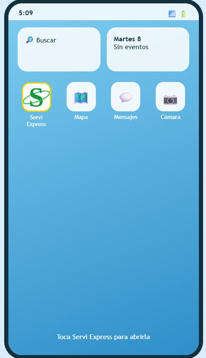
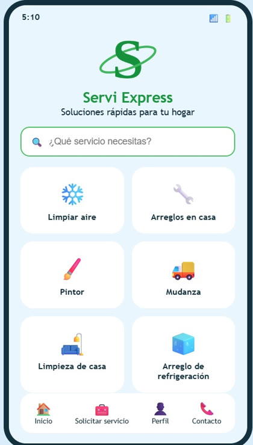

R
Ruth Becerra
20 años
Su pasatiempo es todo lo que tenga que ver con la peluquería.
ServiExpress es la aplicación móvil que conecta a las familias de Barranquilla con técnicos y trabajadores disponibles, de forma rápida y confiable.


Es un problema pequeño que arruina el día: algo se daña en casa y no sabes a quién llamar.
Como grupo vimos una necesidad que compartimos con muchas personas en Barranquilla: quieren hacer un arreglo en casa y no conocen técnicos calificados. A veces alguien les recomienda a un trabajador, y al final el trabajo queda mal hecho.
ServiExpress nace para resolver ese problema. Actuamos como intermediario entre el cliente y el técnico, y una de nuestras mayores ventajas son las calificaciones: antes de contratar, puedes ver cómo ha sido valorado cada técnico y decidir con más confianza.
Una tarde calurosa, el aire acondicionado se apaga y el termómetro marca 32 °C. Buscar un técnico significa pedir recomendaciones, esperar respuestas y, muchas veces, que nadie llegue o conteste.
Con ServiExpress eliges el servicio, escribes tu dirección, la fecha y la hora, y confirmas. La app te asigna un técnico y te muestra su nombre y teléfono.
El técnico llega, revisa el equipo y lo deja funcionando en pocos minutos. Tú recuperas tu tiempo y tu tranquilidad.
La app está pensada para personas y familias que no saben a quién acudir cuando necesitan una reparación en casa.
Escoges lo que necesitas hoy desde el menú de servicios del hogar.
Ingresas tu dirección, la fecha y la hora, y confirmas la solicitud.
La app asigna un técnico y te muestra su nombre y su teléfono de contacto.
ServiExpress conecta a las personas con los técnicos, pero no fija ni cobra los precios de los servicios. Cada técnico define el valor de su trabajo y lo acuerda directamente con el cliente.
Próximos en llegar, según lo que más pidió el mercado:
Probamos el prototipo con un cuestionario de 15 preguntas en Microsoft Forms, que respondió un grupo inicial de personas cercanas. Son los primeros resultados y los usamos para orientar el producto.
considera útil o muy útil reunir varios servicios y trabajadores en una sola app.
usaría la app o consideraría usarla.
la recomendaría a familiares y conocidos que necesiten estos servicios.
quiere poder consultar calificaciones y comentarios de otros clientes.
Somos un equipo de Barranquilla que quiere resolver un problema que vivimos todos en casa.
Su pasatiempo es todo lo que tenga que ver con la peluquería.
Disfruta resolviendo puzzles y problemas matemáticos.
Su pasatiempo es practicar calistenia.
Proyecto de la asignatura Creación de Empresas, Corporación Universitaria Americana, Barranquilla.
Si eres inversionista, aliado, técnico o simplemente te interesa el proyecto, escríbenos.